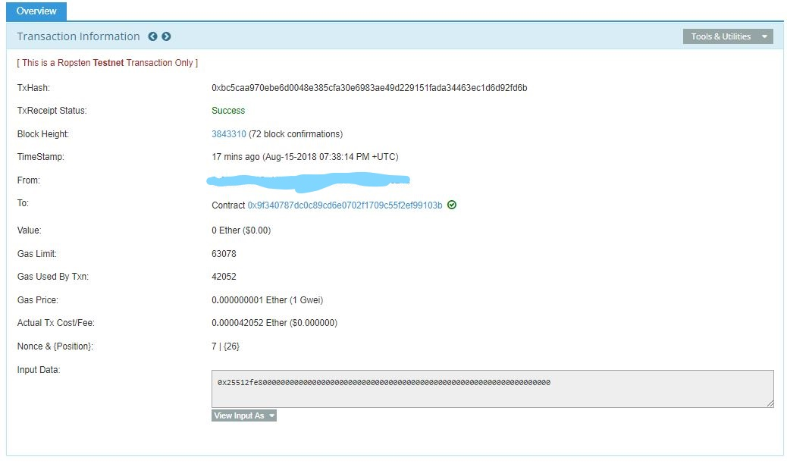

Blockchain understanding
The blockchain creates a sequence of blocks that record or create new transactions that would be the location of cryptocurrency, data and surveys (Nakamoto, S). After each of the blocks has been finalised it will be added to the chain of blocks creating the blockchain at that very moment. The blockchain is discrete and freely obtainable as it does not rely on a server or computer, allowing any transaction to be visible to any user instantly while using a public ledger. Blockchain removes the “middle-man” allowing security and speed of computing power to increase
The creator of bitcoin, Satoshi Nakamoto designed and created bitcoin in 2009 which is a peer-to-peer(P2P), where the transactions are verified by network nodes and recorded onto blockchain through a public distributed ledger.
MetaMask and Blockchain
Here is a Picture of Both using a ROPSTEN test network and DApp while studinG my Masters, this was based on my disseartation, feel free to email Me